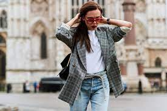
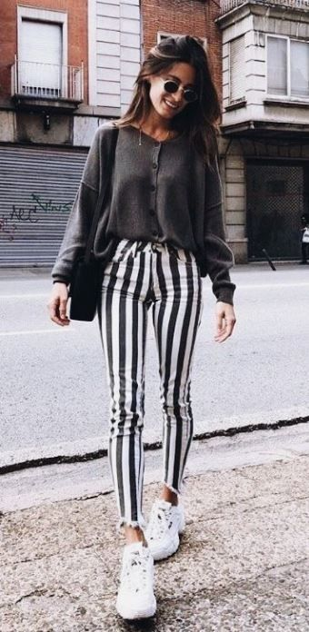
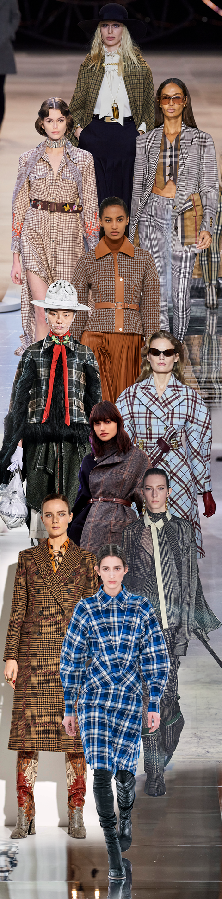

bym
2020s Fashion
"Fashions of the 2020s represent a departure from 2010s fashion and have
thus far been largely inspired by fashions of the 1980s, late 1990s, and
early to mid 2000s.Popular unisex brands in the UK and US include
Adidas, Nike, Kappa, Tommy Hilfiger, Ellesse, Ralph Lauren, and
Superdry.
The spring of 2020 was characterised by a rejection of the
form-fitting 2010s fashion in the UK, Asia, Latin America and Europe,
due in part to the coronavirus lockdown and a resurgence of interest in
late 1990s to early 2000s fashion. Fairtrade, vintage and vegan friendly
clothing free from wool and leather went mainstream in reaction to the
needless disposal of unsold fast fashion clothes, and also in response
to the closure of high street stores during the coronavirus pandemic.
By fall 2020, younger British and American women abandoned
skinny jeans in favor of sweatpants, puffer jackets made from upcycled
deadstock fabric, sweatsuits, crocs, leggings, baggy shorts, pants with
drawstring waists, zip up denim jumpsuits with large pockets, pink
velour tracksuits, platform sandals, baggy pants white knee boots,
fringed handbags especially in black or yellow, brocade topcoats,
midriff baring tops, ankle length skirts sometimes made from sheer
fabric, Telfar branded bags, ribbed turtlenecks, off the shoulder
knitted tops in beige or blush pink, white bralets, chunky cable knit
scarves, culottes chelsea boots, Doc Martens, science fiction inspired
metallic jackets, loose-fitting shift dresses or blouses, oversized 80s
inspired pale blue or houndstooth jackets with shoulder pads, and
cashmere cardigans, and it became acceptable to wear pajamas in public"
(
Wikipedia).
| Shoes |
Materials |
Outerwear |
| White Sneakers, Crocs |
Knits & Wool |
Cashmere Cardigans |
| Chelsea Boots |
Sheer or Ribbed Fabric |
Baggy/Oversized Denim |
| Boots |
Plaid & Floral Prints |
Track/Jump/Sweatsuits |


"Popular colors included grey, silver, pastel pink, violet,
pale blue, lavender, mint green, faded yellow, pastel teal, orange, red
and brown. Workplace dress codes became more casual due to a higher
proportion of white collar staff working from home, and many
professional women paired a formal blouse with casual legwear like
shorts or even pajama bottoms when holding video conferences" (
Wikipedia).
1960s influences
The summer of 2021 saw a revival of psychedelic mid to late 1960s
fashion in the UK, Asia, America, and Africa. Many younger women wore
flared trousers, "cottagecore" prairie dresses with floral embroidery,
blue gingham minidresses, backless sun dresses, floor-length kaftans
with jeans, tiered flamenco dresses that flared out in the lower leg,
white gypsy tops with Mexican-inspired floral embroidery, and dresses,
maxi skirts and blouses with sunflower print, checkerboard motifs,
diamond, and hexagonal geometric prints. Popular colors included brown,
royal blue, hot pink, orange, yellow and purple.
